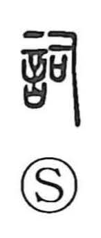

詞

Uncategorized
Kun: kotoba | On: shi
words ・ poem ・ writing ・ prayer words
Explanation
詞 is a phono-semantic character formed with 言, “speech,” alongside 司 as the phonetic. In Shirakawa’s view, 司 portrays the handling of a ritual sai—a covenant vessel into which written petitions to the deities were placed—so the graph originally evokes the act of setting forth sacred words. This is borne out in the Chu Ci (Li Sao), where 詞 denotes words addressed to a god in prayer. From this ritual core the meaning broadened to “words” in general, and later came to include “poem” and “writing.”